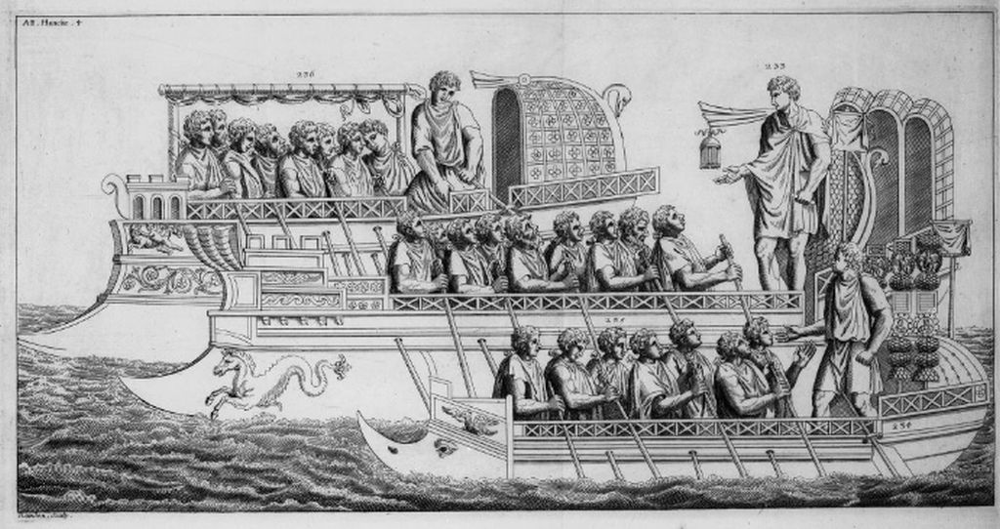
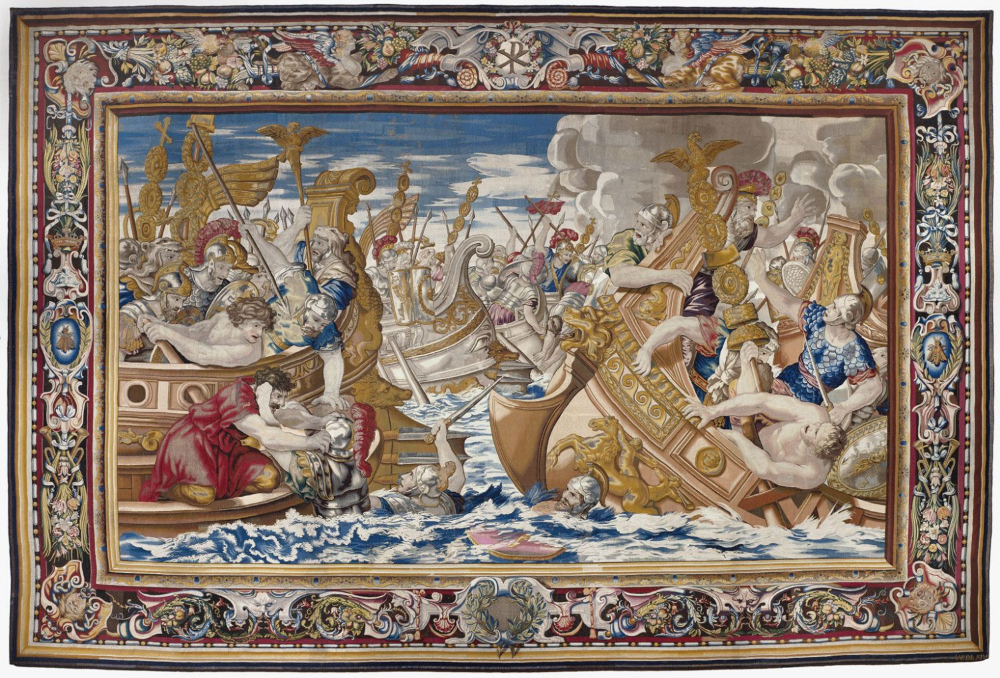

V-IV века до н.э. в Греции принято считать, и с полным на то основанием, эпохой триер. И это при том, что на Эгейском море продолжали ходить другие корабли и суда: военные пентеконторы и триаконторы, торговые и рыболовные суда; но они, как это ни покажется странным, практически не оставили никакого следа ни в иконографии, ни в дошедших до нас текстах той эпохи. Все упоминания кораблей касаются практически одних только триер. При этом мы должны обратить внимание, что все дошедшие до нас источники информации об этих триерах являются афинскими.
На основании имеющихся данных мы не можем сказать, что все греки с самого начала имели одну лишь модель триеры, но превосходство афинской триеры, наглядно продемонстрированное во время войн с персами и подтвержденное в ходе Пелопоннесской войны, скорее всего свело различия между триерами Афин и других греческих городов к минимуму. Поэтому, как мы видели в «Птицах» Аристофана , триера стала символом Афин. Когда царь птиц Удод спрашивает у странствующего афинянина Эвельпида, из какой он страны, то в ответ получает:
ὅθεν αἱ τριήρεις αἱ καλαί.
Из страны триер воинственных.
Птицы, Перевод АДРИАНА ПИОТРОВСКОГО

Перевод Пиотровского слишком вольный, ибо κᾰλός лучше переводить не как «воинственный», а как «красивый, прекрасный, прелестный», но это сути не меняет.
В то же время, афинский тип триеры, видимо, существенно отличался от финикийской и римской триер. Впервые подробно об этих отличиях заговорил Люсьен Баш в 1969 году (BASCH, L., 1969, Phoenician oared ships, Mariner's Mirror, 55, 139-162 и 227-245)
В некоторых трудах мы встречаем утверждения, что проблема, или загадка, афинской триеры в явном виде в первый раз была поставлена в 1514 году в работе французского филолога Гийома Бюде, крупнейшего знатока греческого языка эпохи Возрождения. Но это не совсем так. Рассуждения о греческих триерах встречаются, начиная с «Новой истории» византийского историка V века Зосима. Рассказывая о кораблях флота, которым располагал византийский полководец готского происхождения Фравитта в войне против мятежного полководца Гайны, вознамерившегося захватить Константинополь, Зосим отмечает, что Фравитта
«был внимателен к флоту, так как у него было достаточно кораблей для морского сражения. Эти суда назывались либурнийскими, по имени нескольких городов в Италии, где этот вид кораблей впервые был построен. Они были такими же быстроходными, как пентеконтеры, хотя более медленными, чем триремы, и их строительство было прекращено много лет назад.»
Зосим. Новая история. Книга V //(пер. Н. Н. Болгова Белгород. БелГУ. 2000).
Здесь мы имеем довольно неуклюжий и двусмысленный перевод интересующей нас части. Последняя фраза этого отрывка имеет в подлиннике тот смысл, что методы строительства триер были утрачены много лет назад. Зосим в другом месте пишет, что последнее сражение с участием триер произошло при Геллеспонте в 323 году между флотами Константина и Лициния, когда 200 триер Лициния были разбиты значительно меньшим по численности флотом тридцативесельных кораблей Константина. Исход этого сражения ознаменовал собой конец эпохи триер.

Гобелен с изображением сражения между флотами Константина и Лициния
Итак, ко временам Зосима методы строительства греческих триер были полностью утрачены, изображений их внешнего вида не сохранилось, поэтому пытливые умы каждый на свой лад начали фантазировать, конструируя облик легендарного греческого корабля. Первым был современник Зосима Вегеций. Вегеций использовал термин «либурна» как общий для всех военных кораблей, в том числе и существовавших в историческом прошлом. (Точно так же, как авторы из более поздних поколений перенесли название знакомых им кораблей, галер, на все гребные корабли предыдущих эпох). В своем трактате о военном деле он писал:
Что касается величины кораблей, то самые маленькие либурны имеют по одному ряду весел; те, которые немного больше, – по два; при подходящей величине кораблей они могут получить по три, по четыре и по пяти рядов весел. И пусть это никому не кажется огромным, так как в битве при Акциуме, как передают, столкнулись между собой гораздо большие корабли, так что они имели по шести и больше рядов весел.
Флавий Вегеций Ренат, КРАТКОЕ ИЗЛОЖЕНИЕ ВОЕННОГО ДЕЛА (FLAVII VEGETII RENATI. EPITOME REI MILITARIS)
КНИГА ЧЕТВЕРТАЯ, 37) перевод С. П. Кондратьева
Этот простой сам по себе пассаж содержит множество подводных камней, на которые наталкивались последующие поколения исследователей античных кораблей. Поэтому, чтобы наши рассуждения были более наглядными, приведем латинский текст основной части этого отрывка из Вегеция.
Quod ad magnitudinem pertinet, minimae liburnae remorum habent singulos ordines, paulo maiores binos, idoneae mensurae ternos uel quaternos interdum quinos sortiuntur remigio gradus.
Самая крупная из скрытых опасностей таилась в переводе выражения singulos ordines.
Кондратьев переводит его, как мы видели, «по одному ряду весел». Один из самых последних переводов этого отрывка на английский язык (Dana S. Adler, 2010) выглядит так
So far as size is concerned, the smallest warships have one rank of oars at a side, those slightly bigger two ranks, those of appropriate dimensions, three, four, sometimes five ranks for their oarage
Т.е. Адлер добавляет к тексту слова at a side («на один борт»), которых нет в подлиннике. В отличие от последовавшего немного ниже в трактате описания разведывательного корабля, где Вегеций четко пишет
Scafae tamen maioribus liburnis exploratoriae sociantur, quae uicenos prope remiges in singulis partibus habeant, quas Britanni picatos uocant.
К более крупным либурнам присоединяются разведочные скафы, которые имеют на каждой стороне почти по двадцати рядов гребцов; их британцы называют… просмоленными.
Правда, вставка в перевод at a side («на один борт»),, сделанная Адлером, на мой взгляд, может быть оправдана тем, что Вегеций употребляет множественное число (singulos ordines), что может как раз подразумевать два борта, на каждом из которых по одному ряду гребцов.
К сожалению, отсутствует перевод Вегеция в известной серии Loeb Classical Library (так называемая Лёбовская серия), в которой представлены наиболее известные произведения древней греческой и латинской литературы. В каждой книге серии представлен оригинальный греческий или латинский текст с параллельным переводом на английский язык, который считается наиболее точным. Нет перевода Вегеция и в Perseus Digital Library. Поэтому приходится довольствоваться так сказать «неканоническими» переводами.
Моррисон в статье 1941 года, о которой мы говорили раньше, дал такой перевод:
‘As far as concerns size, the smallest liburnians have one row of oars each, the slightly larger two, while those of proper size are given three or four, sometimes five levels for the rowing’
Однако уже в неоднократно цитируемой нами книге 1986 года The Athenian Trireme (Morrison, Coates) этот пассаж выглядит иначе
‘There are several kinds of liburnians, the smallest have one column or file (ordo: i.e. of oarsmen) a side, the slightly bigger ones have two a side, while those of the ideal size have three or four a side; sometimes they have five levels (gradus) a side’
Было бы странным, если бы за эту особенность текста не ухватился знакомый наш морской историк Тилли, который, как мы знаем, считает, что число в названии корабля означает количество гребцов во всем его поперечном сечении, а не на одном лишь борту. Тилли считает, что до настоящего времени никто так и не смог установить, что имел в виду Вегеций: общее число рядов гребцов или число рядов на каждом борту.
Что точно можно установить из этого отрывка Вегеция, так это то, что число в названии корабля не может указывать на число весел на каждом борту. Действительно, Вегеций пишет, что разведывательные скафы меньше по размерам, чем либурны, и что они имеют по двадцать весел на борт. Поэтому Uniremes, Biremes, Triremes и т. д. никак не могут иметь по одному, два, три и т.д. весла на борт, так как в противном случае они были бы меньше Scafae. Не велико достижение, но все же одну маленькую и нелепую гипотезу мы исключили. Осталась самая малость: выяснить, какие объекты обозначаются цифрами в названии античных галер и как их разместить на корабле.
Обсуждение продолжим в следующий раз